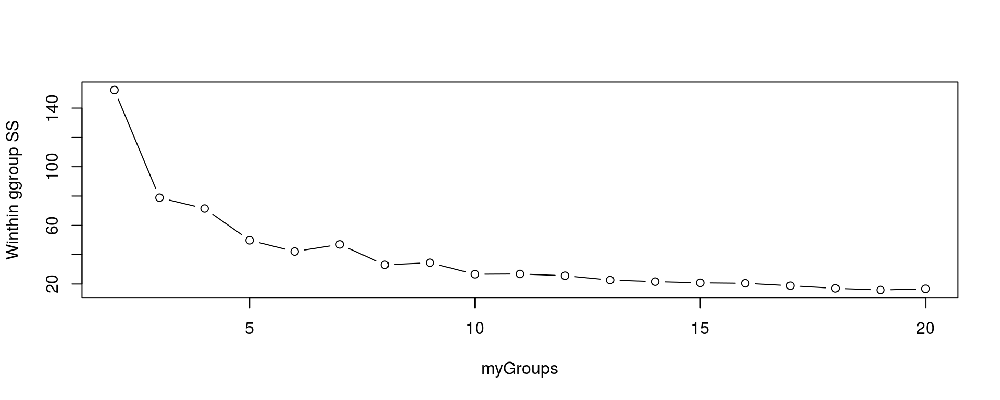

(James et al. 2013; Markham 2014)
data(iris)
head(iris)## Sepal.Length Sepal.Width Petal.Length Petal.Width Species
## 1 5.1 3.5 1.4 0.2 setosa
## 2 4.9 3.0 1.4 0.2 setosa
## 3 4.7 3.2 1.3 0.2 setosa
## 4 4.6 3.1 1.5 0.2 setosa
## 5 5.0 3.6 1.4 0.2 setosa
## 6 5.4 3.9 1.7 0.4 setosa# kmeans(iris[,1:4], centers = 2)
myGroups <- 2:20
myKmeans <- vector("list", length = length(myGroups) - 1)
sapply(myGroups, function(x){ myKmeans[[x-1]] <<- kmeans(iris[,1:4], centers = x) })## [,1] [,2] [,3] [,4] [,5]
## cluster Integer,150 Integer,150 Integer,150 Integer,150 Integer,150
## centers Numeric,8 Numeric,12 Numeric,16 Numeric,20 Numeric,24
## totss 681.3706 681.3706 681.3706 681.3706 681.3706
## withinss Numeric,2 Numeric,3 Numeric,4 Numeric,5 Numeric,6
## tot.withinss 152.348 78.85144 71.44525 49.82228 42.16294
## betweenss 529.0226 602.5192 609.9254 631.5483 639.2077
## size Integer,2 Integer,3 Integer,4 Integer,5 Integer,6
## iter 1 3 3 3 2
## ifault 0 0 0 0 0
## [,6] [,7] [,8] [,9] [,10]
## cluster Integer,150 Integer,150 Integer,150 Integer,150 Integer,150
## centers Numeric,28 Numeric,32 Numeric,36 Numeric,40 Numeric,44
## totss 681.3706 681.3706 681.3706 681.3706 681.3706
## withinss Numeric,7 Numeric,8 Numeric,9 Numeric,10 Numeric,11
## tot.withinss 47.02198 33.08052 34.50123 26.67797 26.86649
## betweenss 634.3486 648.2901 646.8694 654.6926 654.5041
## size Integer,7 Integer,8 Integer,9 Integer,10 Integer,11
## iter 3 3 3 4 3
## ifault 0 0 0 0 0
## [,11] [,12] [,13] [,14] [,15]
## cluster Integer,150 Integer,150 Integer,150 Integer,150 Integer,150
## centers Numeric,48 Numeric,52 Numeric,56 Numeric,60 Numeric,64
## totss 681.3706 681.3706 681.3706 681.3706 681.3706
## withinss Numeric,12 Numeric,13 Numeric,14 Numeric,15 Numeric,16
## tot.withinss 25.6458 22.69839 21.62515 20.8116 20.49106
## betweenss 655.7248 658.6722 659.7454 660.559 660.8795
## size Integer,12 Integer,13 Integer,14 Integer,15 Integer,16
## iter 2 3 4 4 3
## ifault 0 0 0 0 0
## [,16] [,17] [,18] [,19]
## cluster Integer,150 Integer,150 Integer,150 Integer,150
## centers Numeric,68 Numeric,72 Numeric,76 Numeric,80
## totss 681.3706 681.3706 681.3706 681.3706
## withinss Numeric,17 Numeric,18 Numeric,19 Numeric,20
## tot.withinss 18.83128 17.05898 15.92361 16.73973
## betweenss 662.5393 664.3116 665.447 664.6309
## size Integer,17 Integer,18 Integer,19 Integer,20
## iter 4 5 3 4
## ifault 0 0 0 0plot(myGroups, unlist(lapply(myKmeans, function(x){x$tot.withinss})), ylab = "Winthin ggroup SS", type = 'b')
#myMat <- matrix(1, ncol = nrow(iris), nrow = 2)
#barplot(myMat, col = c(myKmeans[[5-1]]$cluster, iris$Species), border = NA)James, Gareth, Daniela Witten, Trevor Hastie, and Robert Tibshirani. 2013. An Introduction to Statistical Learning. Vol. 6. Springer. http://www-bcf.usc.edu/~gareth/ISL/.
Markham, Kevin. 2014. “In-Depth Introduction to Machine Learning in 15 Hours of Expert Videos.” Blog. https://www.r-bloggers.com/in-depth-introduction-to-machine-learning-in-15-hours-of-expert-videos/.
Copyright © Brian J. Knaus. All rights reserved.